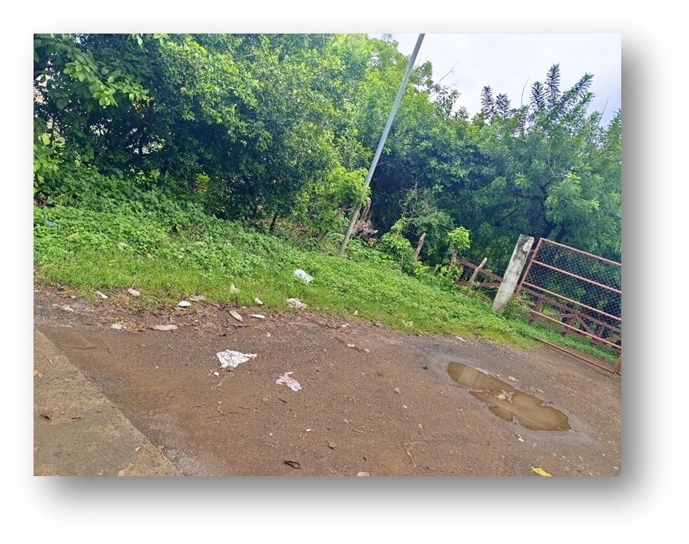
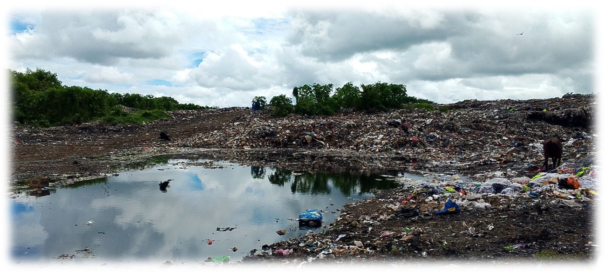
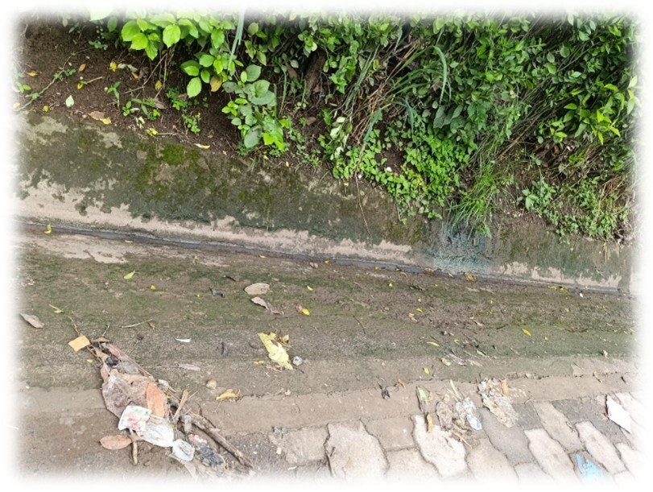
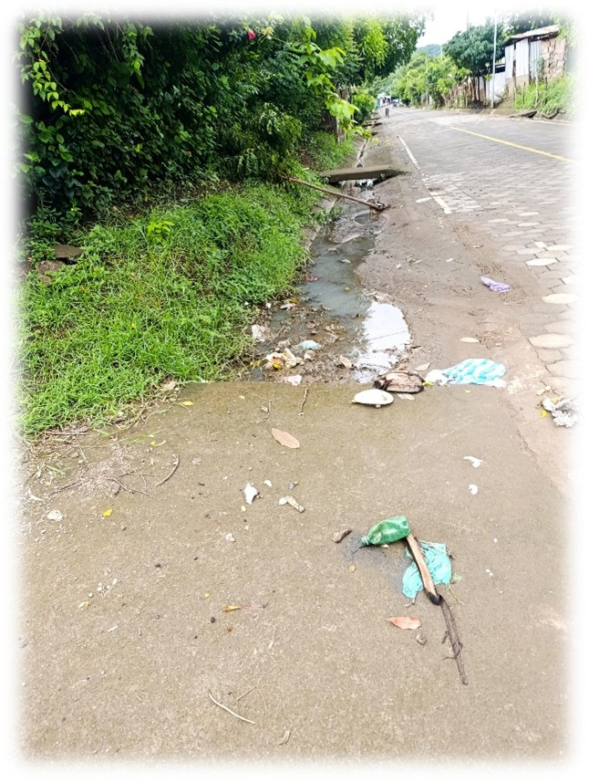

Introducción
El manejo de residuos sólidos y líquidos es esencial para la sostenibilidad ambiental y la salud pública.
En Nicaragua, la gestión de desechos enfrenta retos importantes debido a la falta de infraestructura adecuada
y a una baja concienciación ambiental. Este informe analiza el impacto de la contaminación en dos áreas:
CEDEAGRO (UNIAV) y el vertedero municipal de Rivas.
Análisis
I. Situación en CEDEAGRO (UNIAV)
El 30% de los residuos en esta área provienen de plásticos, afectando tanto la estética del campus como el medio ambiente local.
La falta de un sistema de reciclaje contribuye a la dispersión de residuos, poniendo en riesgo la biodiversidad cercana.

II. Situación en el Vertedero Municipal de Rivas
El vertedero enfrenta una crisis con el 80% de sus residuos consistentes en plásticos.
La quema de residuos y la disposición inadecuada generan contaminación del suelo, agua y aire.

Conclusión
Un enfoque integral en la gestión de residuos es clave para mitigar los impactos ambientales en CEDEAGRO y el Vertedero Municipal de Rivas.
La educación, la inversión en infraestructura y la reducción de plásticos son fundamentales para garantizar un futuro sostenible.
Anexos
Frente de de la plante de CEDEAGRO

Cunetas alrededor de CEDEAGRO

Cunetas obstruidas con basura
Vertedero Municipal de Rivas